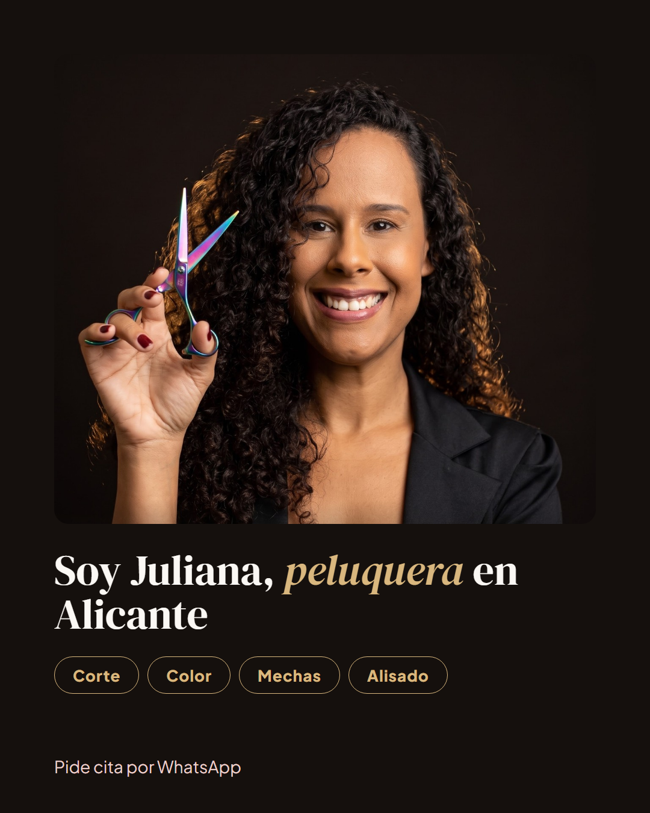
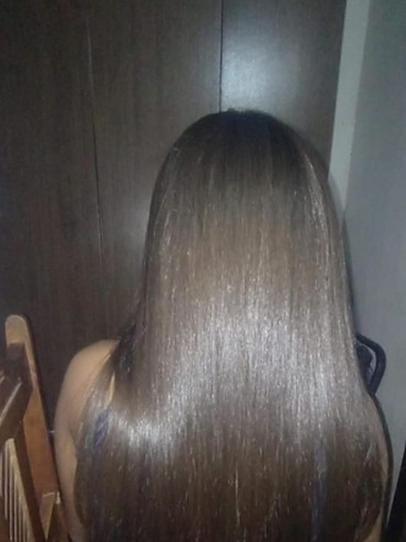
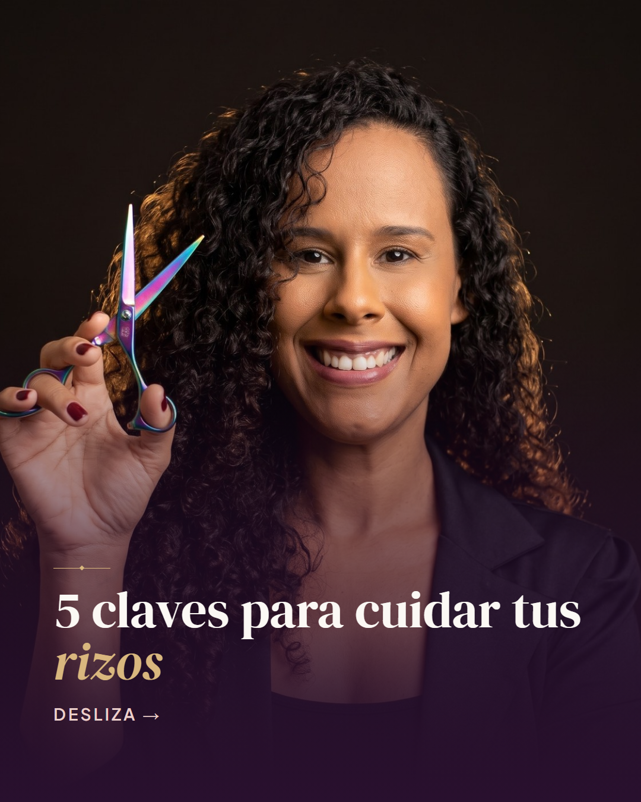
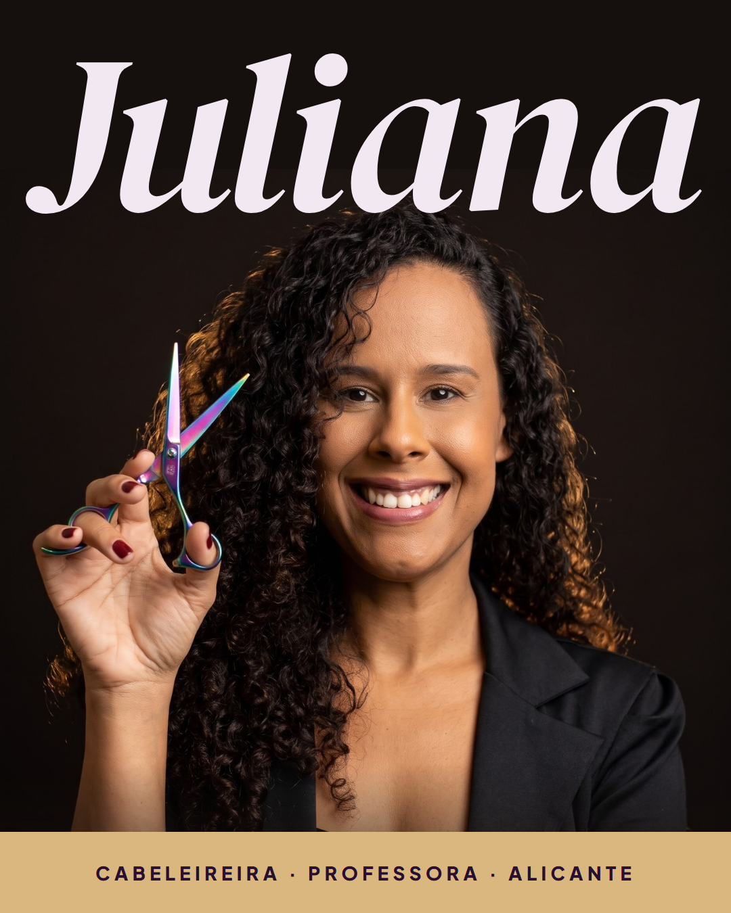
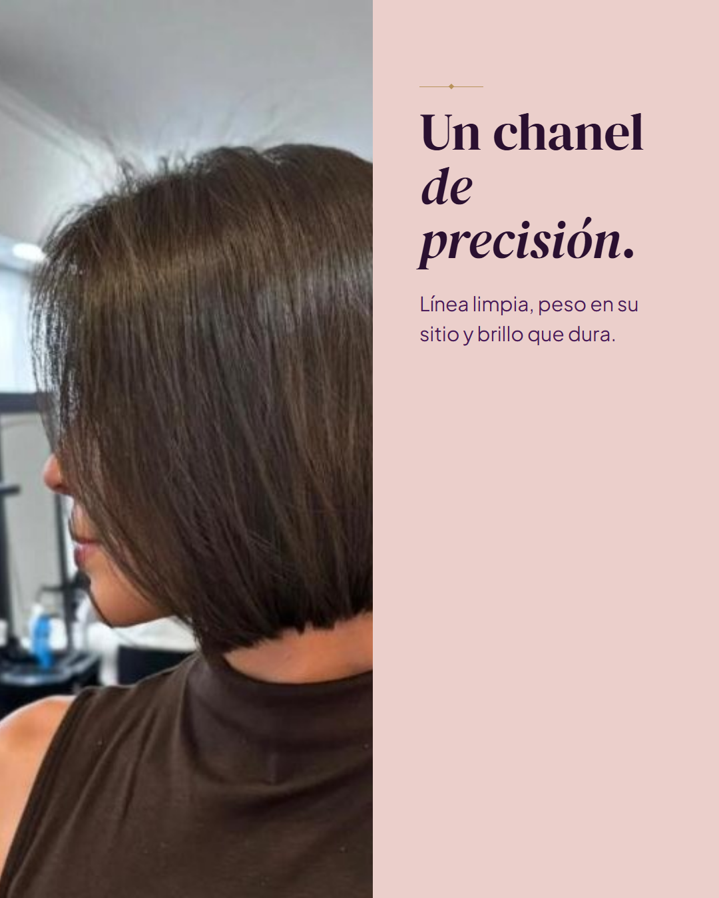
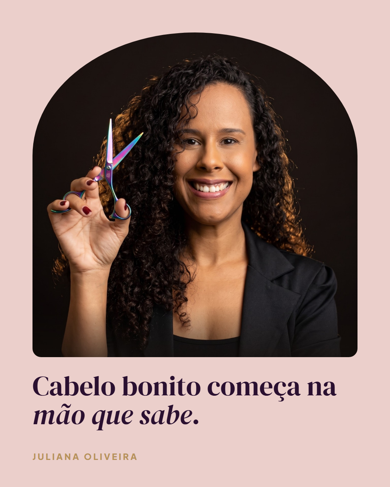
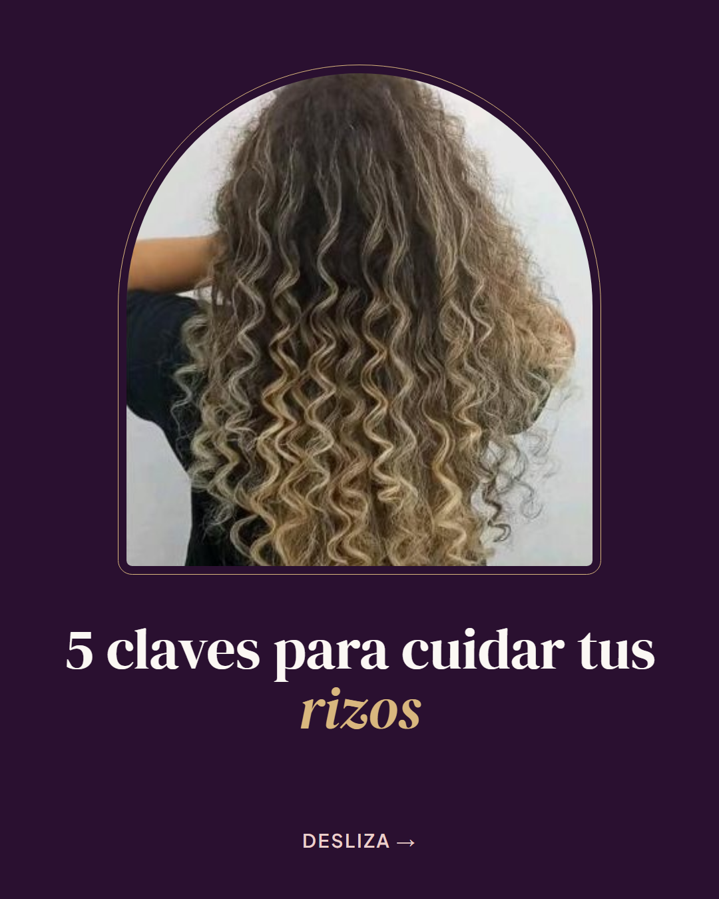
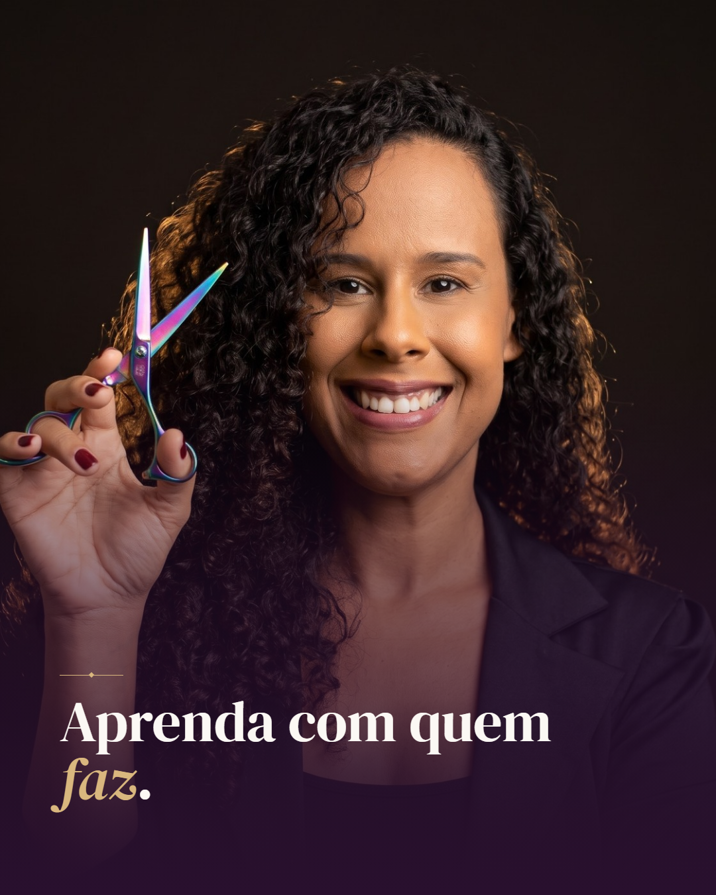
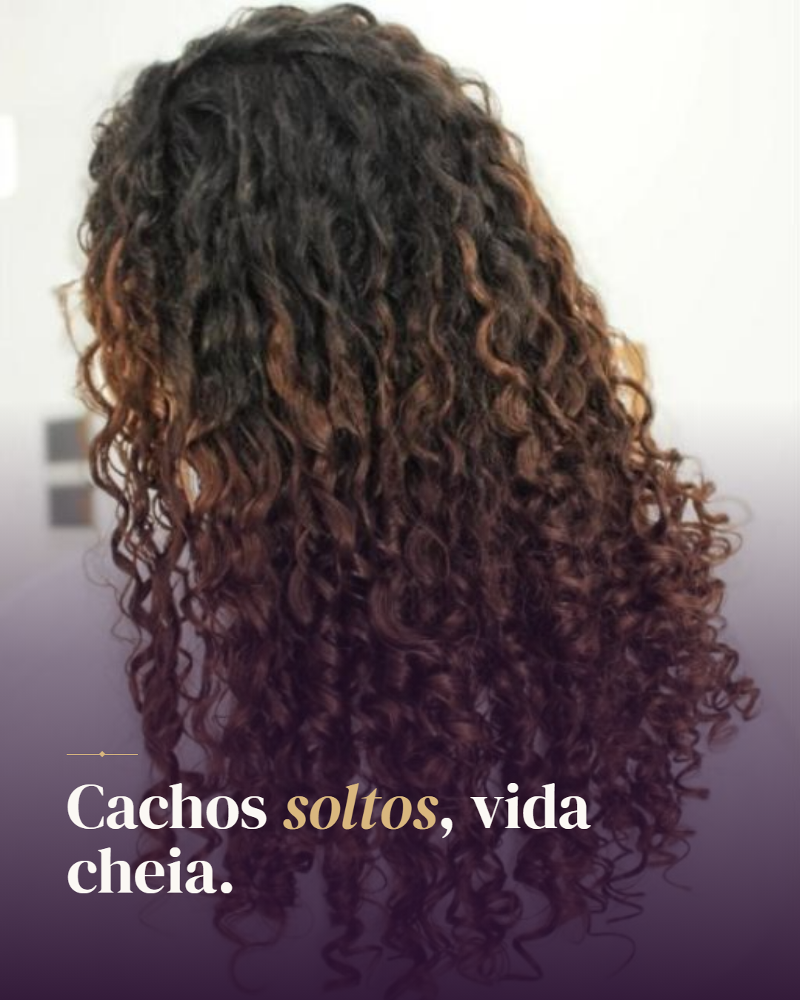
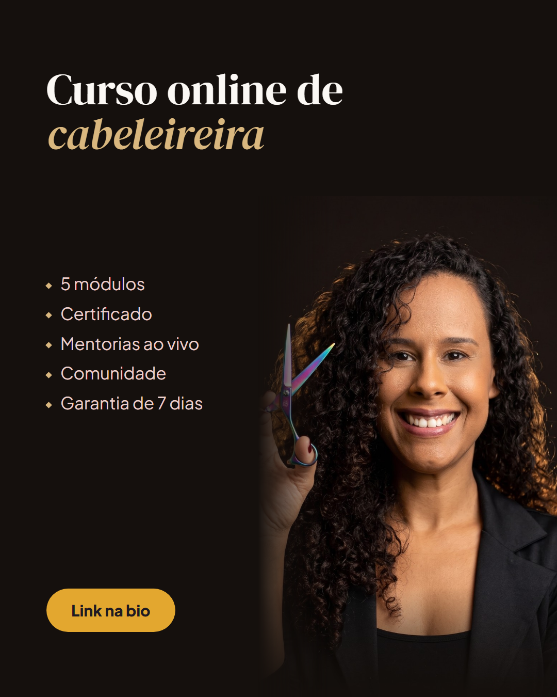

PresentaciónInstagram do salão, versão 2
Simulação feita por mim, a partir do seu perfil público. Nada foi alterado no seu perfil. Textos em espanhol e itens com [confirmar] são sugestões para você aprovar.
julianaoliveira_cabelos
JO
Juliana Oliveira · Peluquería Alicante
Peluquería
Peluquera con +20 años · Formadora de peluqueras
Corte · Color · Mechas · Depilación [confirmar]
Alicante [confirmar dirección y horario]
Reservar por WhatsApp
Corte · Color · Mechas · Depilación [confirmar]
Alicante [confirmar dirección y horario]
Reservar por WhatsApp
CorteColorMechasDepilaciónDónde estamosOpiniones

Antes y despuésCómo reservar








Como lê quem chega
Em 3 segundos a cliente de Alicante vê quem é você, o que faz, onde está e como reservar. A primeira linha da grade são os 3 fixados: apresentação, antes e depois, como marcar hora.
Destaques com capas lisas em lavanda e uma palavra em roxo. Opiniones só com avaliações reais de clientes, com autorização.
frases e textos: sugestão, você aprovaAntes e depois
Perfil atual
- Bio já em espanhol, mas sem dizer quem você é (“20 anos de cabelo” não aparece).
- Um destaque só: “Depilación”.
- Link genérico do wa.link.
- Fotos reais de resultado, sem fixados.
Proposta
- Nome com cidade e ofício, que ajuda na busca.
- Bio em 3 linhas: quem é, o que faz, onde e quando.
- Botão Reservar e WhatsApp com mensagem pronta.
- 6 destaques em capas lisas e grade com ritmo: 1 texto a cada 3 retratos.
As 5 mudanças, em ordem
- Nome do perfil: “Juliana Oliveira · Peluquería Alicante”, para quem busca cabeleireira na cidade.
- Bio em 3 linhas: peluquera con +20 años, serviços [confirmar], Alicante com endereço e horário [confirmar].
- Reservar: botão nativo do Instagram e link do WhatsApp com a mensagem já escrita.
- Destaques: Corte, Color, Mechas, Depilación, Dónde estamos e Opiniones (só reais).
- Grade: 3 fixados na primeira linha, mesmo enquadramento nos antes e depois e legendas em espanhol.
3 mensagens de abertura no WhatsApp
Para cliente nova, em espanhol e com “tú”. Sugestões para você ajustar.
1 · PRIMEIRO CONTATO
Hola, ¡gracias por escribirme! Soy Juliana. Cuéntame qué te gustaría hacerte en el pelo y, si puedes, mándame una foto de cómo lo tienes ahora. Así te digo cómo lo haríamos.
2 · PEDIR CITA
Hola, soy Juliana. Para darte cita necesito saber tres cosas: qué servicio quieres, qué día te viene mejor y si es tu primera vez conmigo. [confirmar servicios]
3 · DEPOIS DA CONSULTA
Hola, ¡qué bien que me escribas! Tengo hueco esta semana [confirmar horario]. ¿Te viene mejor por la mañana o por la tarde? Te confirmo la cita por aquí y te mando la ubicación.
O que mais dá para fazer
Reels em espanhol
Os melhores vídeos do TikTok viram Reels, com legenda nova em espanhol. Salvar o original antes, sem a marca d'água.
Ficha no Google
Perfil da Empresa do salão em Alicante: categoria Peluquería, endereço e horário [confirmar], fotos reais e o mesmo nome em todo lugar. Ainda não confirmamos se já existe ficha.
Link com mensagem pronta
Um link de WhatsApp que já abre com o texto: wa.me/[número]?text=Hola Juliana, quiero pedir cita para…